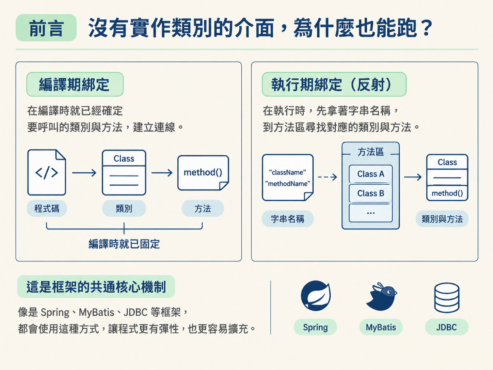
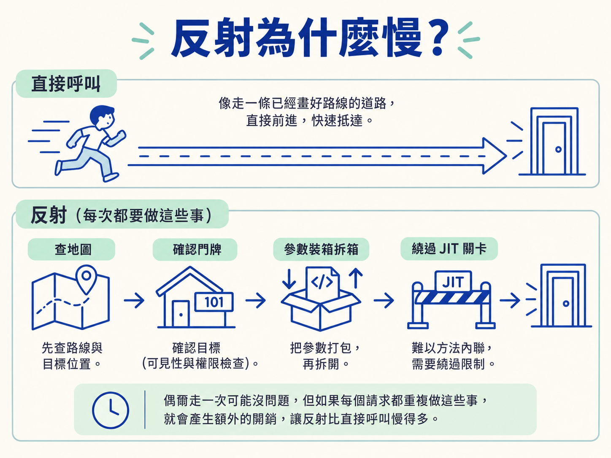
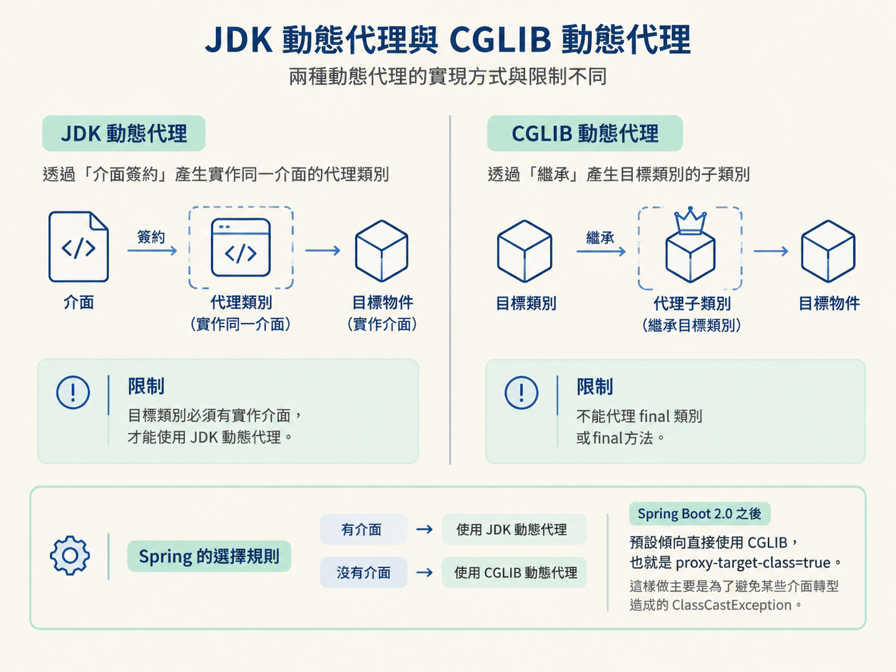
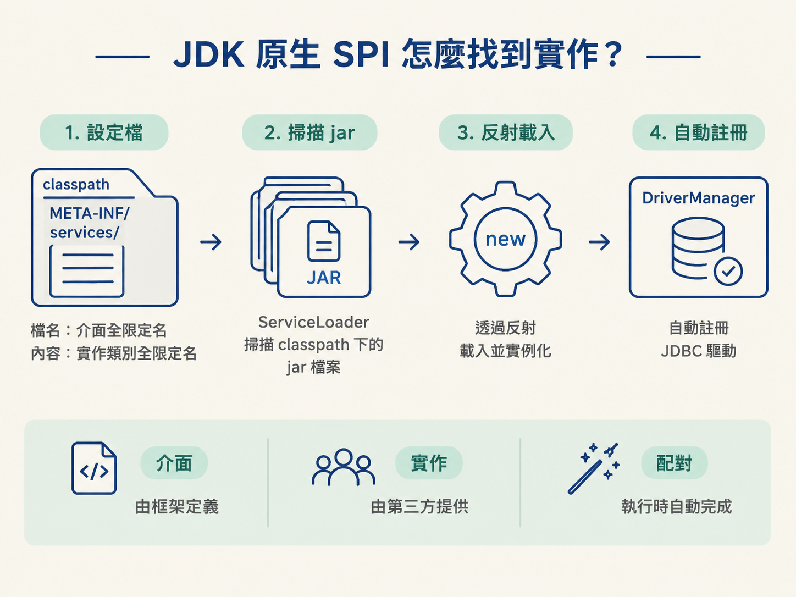

學完這一節，你應該能說明框架為什麼需要反射與動態代理，也能分辨 JDK 動態代理和 CGLIB 的取捨，最後理解泛型擦除的原因，以及 Java 為什麼禁止建立泛型陣列。
你使用 MyBatis 時，應該早已習慣這種寫法：先宣告一個 UserMapper 介面，寫好方法簽名，接著直接呼叫 userMapper.selectById(1)。奇怪的是，這個介面明明沒有實作類別，程式卻真的能把 SQL 發送出去。
Spring 的 AOP 也有類似的魔法。你只要在 Service 方法上加上 @Transactional，不必修改業務程式碼，交易就會自動生效。框架究竟怎麼在程式執行到一半時，才決定要呼叫哪個方法、攔截哪個方法？
這背後有三個關鍵字：反射、動態代理與泛型擦除。反射解決「如何在執行時找到類別」，動態代理解決「如何在執行時產生一個能夠額外做事的物件」，而泛型擦除則說明「為什麼編譯期有型別檢查，執行期卻可能缺少型別資訊」。
一般程式碼是正向進行的：編譯時就知道要建立 new User()，也知道要呼叫 user.setName()。編譯器可以直接把這些呼叫關聯起來。
反射則像是把流程倒過來。編譯時可能根本不知道是否存在一個 User 類別，直到程式執行後，才根據字串 "com.example.User" 找到對應的 Class 物件，再進一步查看它有哪些欄位和方法，最後動態呼叫它們。
框架之所以需要反射，是因為框架作者不可能在編譯 Spring 或 MyBatis 時，就知道你未來會建立哪些 Controller、Service 或 Mapper。框架只能等程式啟動後，再讀取你的類別資訊、建立物件並注入依賴。

反射的成本，不只是那一次方法呼叫本身，而是每次呼叫前都可能需要重新準備與檢查：
public 還是 private，以及目前呼叫者是否具備相應權限。Method.invoke 使用的是 Object 陣列。傳入 int 時，可能要先自動裝箱成 Integer，呼叫完成後再拆箱，因而增加額外的物件配置。可以依照需求分成三個層次處理。
第一是快取。不要每次請求都重新執行 Class.forName() 或 getMethod()，可以把取得的 Method、Field 物件放進 Map。下次需要時直接取出，省掉重複查找。
第二是減少檢查。呼叫 setAccessible(true)，相當於告訴 JVM：「我清楚自己正在做什麼，請不要再進行這部分的權限檢查。」這能省下一些安全檢查成本。
第三是改用更快的機制。JDK 7 提供的 MethodHandle 可以視為較現代化的反射機制，效能通常比傳統反射好一些。若要再往前走，也可以使用 ASM、Javassist 或 CGLIB，在執行時直接產生位元組碼，讓產生出的程式更接近原生呼叫。Spring AOP 就是走這類路線。
假設你想在方法執行前後加入日誌、交易或權限檢查，但又不想把這些橫切邏輯塞進每一個業務方法。這時可以在目標物件外面包一層代理。
代理物件對外看起來和目標物件相同。當呼叫者提出請求時，請求會先到代理手上，由代理決定要不要做額外處理，以及何時把請求轉交給真正的目標物件。

靜態代理是手動寫死的做法。你必須自行建立一個代理類別，實作與目標相同的介面，並在每個方法中加入增強邏輯。
這種方式一開始很直觀，但很快就會變得難以維護。假設有一百個 Service 都需要記錄日誌，你可能得手寫一百個代理類別；如果介面改了一個方法名稱，相關代理類別也都要一起修改。而且這些代理類別的 .class 檔案，在編譯期就已經固定下來了。
動態代理則把這些重複工作自動化。你不需要為每個目標類別手寫一個具體代理，只要提供「攔截後要做什麼」的邏輯，代理類別的位元組碼會在程式執行時動態產生。
因此，不論有多少個類別需要加上日誌，都可以共用同一套攔截邏輯。這讓代理機制更通用，也讓業務程式和基礎功能彼此解耦。
兩者最大的差異，在於它們產生代理時依靠的方式不同：
| 比較面向 | JDK 動態代理 | CGLIB 動態代理 |
|---|---|---|
| 核心機制 | 以介面為基礎，產生一個實作該介面的代理類別 | 以繼承為基礎，產生目標類別的子類別 |
| 被代理類別的要求 | 必須有介面，沒有介面就無法使用 | 不需要介面，但目標類別不能是 final |
| 底層依賴 | 使用 JDK 內建的 java.lang.reflect | 依賴第三方的 cglib 與 asm |
| 限制 | 無法代理沒有介面的類別 | 無法代理 final 類別或 final 方法 |
| 效能 | 早期效能較慢，JDK 8 之後已有大幅改善 | 產生代理時較慢，但方法呼叫速度較快 |
Spring 的傳統選擇規則是：目標物件有實作介面時，預設使用 JDK 動態代理；沒有介面時，才切換成 CGLIB。
不過，Spring Boot 2.0 之後，預設設定傾向直接使用 CGLIB。這樣可以避免部分因為代理物件以介面型別轉換時，可能產生的 ClassCastException。
Java 泛型常被戲稱為「假泛型」，因為它主要只存在於編譯期。
例如你寫下 List<String> 時，編譯器會檢查這個清單是否只放入 String。但是程式編譯成位元組碼並交給 JVM 執行後，尖括號中的泛型資訊會被擦除，最後回到裸型別 List。
如果沒有指定上限，泛型型別 T 會被替換成 Object；如果宣告為 extends Number，則會被替換成 Number。這個過程就叫做型別擦除。

主要原因是向後相容。
泛型直到 Java 5 才加入，但在那之前，Java 已經存在大量使用裸型別的舊程式。如果泛型型別以具體形式保留到執行期，舊程式就可能無法在新的 JVM 上繼續執行。
Java 選擇在編譯期進行型別檢查，執行期則擦除泛型資訊，讓新舊程式碼可以共存。代價是：程式執行時，往往拿不到泛型參數的具體型別。
問題出在陣列與泛型對型別的處理方式不同。
陣列是協變且具體化的。String[] 在執行期知道自己只能存放 String。如果硬要把 Integer 放進去，會立即拋出 ArrayStoreException。
陣列也具有協變特性，因此下面這種賦值是合法的：String[] 可以指定給 Object[]。
泛型則不具備這種協變關係，而且型別資訊會在執行期被擦除。假設 Java 允許建立以下陣列：
List<String>[] ls = new List<String>[10];
接下來就可能發生這樣的問題：
ls 指定給 Object[] oa，這在語言層面是合法的。oa 裡放入一個 List<Integer>：oa[0] = new ArrayList<Integer>();。List<Integer> 與 List<String> 都只是 List。陣列會以為兩者相同，因此不會立刻報錯。oa[0] 當成 List<String> 取出元素時，才會在型別轉換的那一刻爆炸，拋出 ClassCastException。換句話說，泛型陣列會讓陣列原本可靠的執行期型別檢查失效。與其允許一個到處可能出現漏洞的型別系統，Java 乾脆在編譯期禁止建立泛型陣列。
這不是單純偷懶，而是因為「泛型的型別擦除」與「陣列的執行期具體化」本來就互相衝突。兩者無法同時完整保留時，Java 選擇禁止這種組合。

反射讓程式能在執行時取得類別與方法資訊；動態代理再利用這些能力，在執行時產生一個可以攔截與增強行為的物件；泛型擦除則提醒我們，編譯期的型別資訊不一定會完整保留到執行期。
把三者放在一起看，它們都在處理同一個矛盾：編譯期的程式結構是靜態且明確的，但框架的需求往往要等到執行時才知道。反射與動態代理選擇把部分決定延後到執行期；泛型擦除則以向後相容為代價，讓泛型型別資訊不再完整存在於執行期。